전자기사 (2010-03-07 기출문제)
1과목: 전기자기학
1. 수직편파는?
- 대지에 대해서 전계가 수직면에 있는 전자파
- 대지에 대해서 전계가 수평면에 있는 전자파
- 대지에 대해서 자계가 수직면에 있는 전자파
- 대지에 대해서 자계가 수평면에 있는 전자파
(정답률: 80%)

2. 길이가 100[cm]인 자기회로를 구성할 때, 비투자율이 50인 철심을 이용한다면, 자기저항을 2.5×107 [AT/Wb]이하로 하기 위해서는 단면적을 약 몇 [m2 ]이상으로 하여야 하는가?
- 3.6×10-4[m2]
- 6.4×10-4[m2]
- 7.9×10-4[m2]
- 9.2×10-4[m2]
(정답률: 알수없음)
3. 유전율이 각각 다른 두 유전체를 서로 경계를 이루며 접해있다. 다음 중 옳지 않은 것은? (단, 이 경계면에는 진전하분포가 없다고 한다.)
- 경계면에서 전계의 접선성분은 연속이다.
- 경계면에서 전속밀도의 법선성분은 연속이다.
- 경계면에서 전계와 전속밀도는 굴절한다.
- 경계면에서 전계와 전속밀도는 불변이다.
(정답률: 알수없음)
4. 도전도 k = 6×1017 [℧/m], 투자율 μ =6/π× 10-7[H/m]인 평면도체 표면에 10[kHz]의 전류가 흐를 때, 침투되는 깊이 δ[m]는?
- 1/6×10-7[m]
- 1/8.5×10-7[m]
- 36/π×10-10[m]
- 36/π×10-6[m]
(정답률: 알수없음)
5. 내부장치 또는 공간을 물질로 포위시켜 외부 자계의 영향을 차폐시키는 방식을 자기차폐라한다. 다음 중 자기차폐에 가장 좋은 것은?
- 강자성체 중에서 비투자율이 큰 물질
- 강자성체 중에서 비투자율이 작은 물체
- 비투자율이 1보다 작은 역자성체
- 비투자율에 관계없이 물질의 두께에만 관계되므로 되도록이면 두꺼운 물질
(정답률: 알수없음)
6. 자기인덕턴스의 성질을 옳게 표현한 것은?
- 항상 정(正)이다.
- 항상 부(負)이다.
- 항상 0이다.
- 유도되는 기전력에 따라 정(正)도 되고 부(負)도 된다.
(정답률: 알수없음)
7. 어떤 자기회로에 3000[AT]의 기자력을 줄 때, 2×10-3 [Wb]의 자속이 통하였다. 이 자기회로의 자화에 필요한 에너지는 몇 [J]인가?
- 3×10-3[J]
- 3.0[J]
- 1.5×10-3[J]
- 1.5[J]
(정답률: 알수없음)
8. 앙페르의 주회 적분의 법칙(Ampere's circuital law)을 설명한 것으로 올바른 것은?
- 폐회로 주위를 따라 전계를 선적분한 값은 폐회로내의 총 저항과 같다.
- 폐회로 주위를 따라 전계를 선적분한 값은 폐회로내의 총 전압과 같다.
- 폐회로 주위를 따라 자계를 선적분한 값은 폐회로내의 총 전류와 같다.
- 폐회로 주위를 따라 자계와 전계를 선적분한 값은 폐회로내의 총 저항, 총 전압, 총 전류의 합과 같다.
(정답률: 알수없음)
9. 자유공간 중에서 점 P(2, -4, 5)가 도체면상에 있으며, 이 점에서 전계 E=3ax-6ay+2az[V/m]이다. 도체면에 법선성분 En 및 접선성분 Ei의 크기는 몇 [V/m] 인가?
- En = 3, Ei = -6
- En = 7, Ei = 0
- En = 2, Ei = 3
- En = -6, Ei = 0
(정답률: 알수없음)
10. 평행판 콘덴서에 어떤 유전체를 넣었을 때, 전속밀도가 4.8×10-7[C/m2 ]이고 단위체적당 에너지가 5.3×10-3[J/m3]이었다. 이 유전체의 유전율은 몇 [F/m] 인가?
- 1.15×10-11[F/m]
- 2.17×10-11[F/m]
- 3.19×10-11[F/m]
- 4.21×10-11[F/m]
(정답률: 알수없음)
11. 무손실 전송 회로의 특성 임피던스[Ω]는?
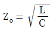
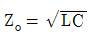
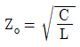
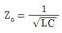
(정답률: 알수없음)
12. 자기 인덕턴스 0.⑤[H]의 회로에 흐르는 전류가 매초 530[A]의 비율로 증가할 때 자기 유도 기전력[V]은?
- -13.3[V]
- -26.5[V]
- -39.8[V]
- -53.0[V]
(정답률: 알수없음)
13. 자유공간에서 전파 E(z, t) =103 sin(ωt - βz)ay [V/m]일 때 자파 H(z, t)[A/m]는?
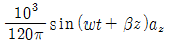
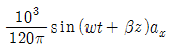
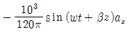
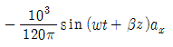
(정답률: 알수없음)
14. 렌쯔의 법칙을 올바르게 설명한 것은?
- 전자유도에 의하여 생기는 전류의 방향은 항상 일정하다.
- 전자유도에 의하여 생기는 전류의 방향은 자속변화를 방해하는 방향이다.
- 전자유도에 의하여 생기는 전류의 방향은 자속변화를 도와주는 방향이다.
- 전자유도에 의하여 생기는 전류의 방향은 자속변화와는 관계가 없다.
(정답률: 알수없음)
15. V=x2 [V]로 주어지는 전위 분포일 때, x=20[cm]인 점의 전계는?
- +x 방향으로 40[V/m]
- -x 방향으로 40[V/m]
- +x 방향으로 0.4[V/m]
- -x 방향으로 0.4[V/m]
(정답률: 알수없음)
16. 영구자석에 관한 설명으로 옳지 않은 것은?
- 한번 자화된 다음에는 자기를 영구적으로 보존하는 자석이다.
- 보자력이 클수록 자계가 강한 영구자석이 된다.
- 잔류 자속밀도가 클수록 자계가 강한 영구자석이 된다.
- 자석재료로 폐회로를 만들면 강한 영구자석이 된다.
(정답률: 알수없음)
17. 유전율이 10인 유전체를 5[V/m]인 전계내에 놓으면 유전체의 표면전하밀도는 몇 [C/m2]인가? (단, 유전체의 표면과 전계는 직각이다.)
- 0.5[C/m2]
- 1.0[C/m2]
- 50[C/m2]
- 250[C/m2]
(정답률: 알수없음)
18. 진공 중에 놓은 Q[C]의 전하에서 발산되는 전기력선의 수는?
- Q
- Є0
- Q/Є0
- Є0/Q
(정답률: 알수없음)
19. 대지의 고유저항이 ρ[Ωㆍm]일 때, 반지름 a[m] 인 그림과 같은 반구 접지극의 접지저항[Ω]은?
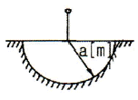
- ρ/4πa
- ρ/2πa
- 2πρ/a
- 2πρa
(정답률: 알수없음)
20. 비유전율이 εr인 유전체 표면에서 d1만큼 떨어져 있는 점전하 Q에 작용하는 힘의 크기와 유전체 표면에서 d2만큼 떨어져 있는 점전하 2Q에 작용하는 힘의 크기가 같을 때 d2는?
- d2= 0.5d1
- d2= d1
- d2= 1.5d1
- d2= 2d1
(정답률: 알수없음)
2과목: 회로이론
21. 역률 80[%], 부하의 유효전력이 80[kW]이면 무효전력은?
- 20[kVar]
- 40[kVar]
- 60[kVar]
- 80[kVar]
(정답률: 알수없음)
22. 단위 계단함수 U(t)와 지수 e-t의 컨볼루션 적분은?
- e-t
- 1 / e-t
- 1-e-t
- 1+e-t
(정답률: 알수없음)
23. 그림과 같은 저항 회로에서 합성 저항이 Rab=12[Ω]일 때, 병렬 저항 Rx의 값은 몇 [Ω] 인가?
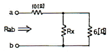
- 3
- 4
- 5
- 6
(정답률: 알수없음)
24. RL 직렬 회로에서 그 양단에 직류 전압 E를 연결한 다음 한참 후에 스위치 S를 개방하면 L/R 초 후의 전류는 몇 [A] 인가?
- 0.2L/R
- 0.368L/R
- 0.5L/R
- 0.632L/R
(정답률: 알수없음)
25. 자기 인덕턴스 L1, L2가 각각 5[H], 2[H]인 두 코일을 같은 방향으로 직렬로 연결하면 합성 인덕턴스는 25[H]이다. 두 코일간의 상호 인덕턴스 M은?
- 7[H]
- 9[H]
- 18[H]
- 22[H]
(정답률: 알수없음)
26. 다음 설명에 해당하는 회로망 정의는?
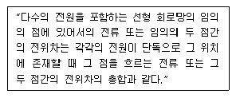
- 노튼(Norton) 정리
- 테브닌(Thevenin) 정리
- 중첩(Superposition)의 원리
- 밀만(Millman)의 정리
(정답률: 알수없음)
27. 단위 세기의 임펄스 함수인 δ(t)의 Fourier 변환은?
- 0
- 1
- u(t)
- 1-u(t)
(정답률: 알수없음)
28. 그림과 같은 4단자 회로망에서 4단자 정수를 나타날 때 A 값은? (단, A는 개방 역방향 전압 이득임)
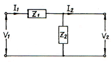
- Z1
- 1
- 1/Z2
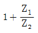
(정답률: 알수없음)
29. 그림은 이상적 변압기이다. 성립되지 않는 관계식은? (단, n1, n2는 1차 및 2차 코일의 권회수,
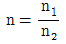
이다.)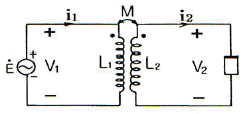
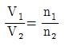
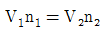
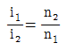
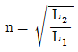
(정답률: 알수없음)
30. 페이저도가 다음 그림과 같이 주어졌을 때, 이 페이저도에 일치하는 등가 임피던스는?
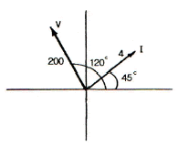
- 12.9+j 48.3
- -25+j 43.3
- 25+j 43.3
- 2.8+j 2.8
(정답률: 알수없음)
31. 다음과 같은 계단함수를 시간 a만큼 천이시켰을 때, 이 신호에 대한 라플라스 변환으로 옳은 것은?
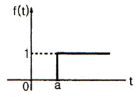
- 1/s
- 1/s-1
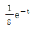
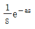
(정답률: 알수없음)
32. R-C 직렬회로에 일정 전압 E[V]를 인가하고, t=0에서 스위치를 ON한다면 콘덴서 양단에 걸리는 전압 VC는?
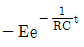
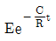
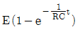
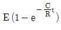
(정답률: 40%)
33. 다음 회로의 어드미턴스 파라미터 Y11은 얼마인가?
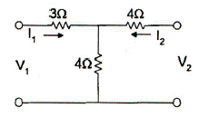
- 1/7[℧]
- 1/5[℧]
- 4/7[℧]
- 1/3[℧]
(정답률: 알수없음)
34. 전송손실의 단위 1[neper]는 몇 데시빌(dB) 인가?
- 1.414
- 1.732
- 5.677
- 8.686
(정답률: 40%)
35. R-L 병렬회로에서 일정하게 인가된 정현파 전류의 위상 θ에 대하여 저항에 흐르는 전류 위상 θ1과 인덕터에 흐르는 전류 위상 θ2를 나타낸 것으로 옳은 것은?
- θ < θ1 < θ2
- θ2 < θ1 < θ
- θ2 < θ < θ1
- θ1 < θ < θ2
(정답률: 알수없음)
36. RC 직렬회로에서 직류전압을 인가할 때, 전류값이 초기값의 e-1배가 되는 시간은 몇 [s] 인가?
- 1/RC
- RC
- C/R
- R
(정답률: 알수없음)
37. 10[V]의 기전력으로 300[C]의 전기량이 이동할 때 몇 [J]의 일을 하게 되는가?
- 1000[J]
- 2000[J]
- 3000[J]
- 4000[J]
(정답률: 40%)
38. 다음 그림의 브리지가 평형 상태라면 C1의 값은?
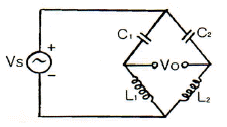
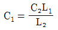
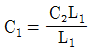
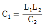
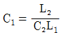
(정답률: 알수없음)
39. 다음 회로가 정저항 회로가 되기 위한 R의 값은?
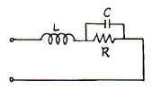
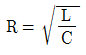
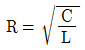
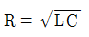
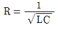
(정답률: 알수없음)
40. 2단자 임피던스가
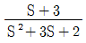
일 때, 극점(pole)은?- -3
- 0
- -1, -2, -3
- -1, -2
(정답률: 알수없음)

3과목: 전자회로
41. 다음과 같은 FET 소신호 증폭기회로에서 입력전압이 10[mV]일 때, 출력전압으로 가장 적합한 것은?
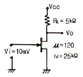
- 입력전압과 동위상인 100[mV]
- 입력전압과 역위상인 100[mV]
- 입력전압과 동위상인 200[mV]
- 입력전압과 역위상인 200[mV]
(정답률: 알수없음)
42. 다음 차동증폭기 회로의 출력 VO로 가장 적합한 것은? (단, 연산증폭기의 특성은 이상적이다.)
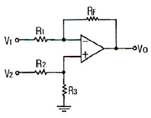
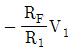
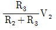
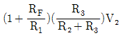
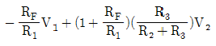
(정답률: 알수없음)
43. IDSS=25[mA], VGS(off)=15[V]인 P 채널 JFET가 자기바이어스 되는데 필요한 Rs 값은 약 몇 [Ω] 인가? (단, VGS=5[V]이다.)
- 100[Ω]
- 270[Ω]
- 450[Ω]
- 510[Ω]
(정답률: 알수없음)
44. 부궤환시 입력임피던스 변화에 대한 설명으로 틀린 것은?
- 전압 직렬 궤환시 입력임피던스는 감소한다.
- 전류 직렬 궤환시 입력임피던스는 증가한다.
- 전압 병렬 궤환시 입력임피던스는 감소한다.
- 전류 병렬 궤환시 입력임피던스는 감소한다.
(정답률: 알수없음)
45. 이미터 접지 증폭기에서 ICO=0.01[mA]이고, IB=0.2[mA]일 때 컬렉터 전류는 약 몇 [mA] 인가? (단, 이 트랜지스터의 β=50이다.)
- 10.5[mA]
- 12.5[mA]
- 15.1[mA]
- 24.3[mA]
(정답률: 39%)
46. 어떤 2단 증폭기에서 각 증폭기의 하한 임계주파수가 500[Hz]이고 상한 임계주파수가 80[kHz]일 때, 2단 등폭기의 전체 대역폭 B는 약 몇 [kHz] 인가?
- 30[kHz]
- 40[kHz]
- 50[kHz]
- 60[kHz]
(정답률: 알수없음)
47. 다음 회로에서 저항 Re의 역할로 가장 적합한 것은? (단, Ce의 용량은 무한대이다.)
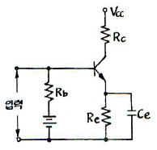
- 출력증대
- 주파수 대역증대
- 동작점의 안정화
- 바이어스 전압감소
(정답률: 알수없음)
48. 커패시터 입력형 필터를 구성한 전파 정류기에서 부하저항이 감소하면 리플(ripple) 전압은?
- 감소한다.
- 증가한다.
- 변동이 없다.
- 주파수가 변화한다.
(정답률: 알수없음)
49. 베이스 접지일 때, 차단주파수가 12[MHz]이다. 이미터 접지일 때 차단주파수는 약 몇 [MHz] 인가?
- 0.1[MHz]
- 0.12[MHz]
- 0.24[MHz]
- 1.2[MHz]
(정답률: 알수없음)
50. 트랜지스터의 고주파 특성으로 차단주파수 fa는?
- 베이스 주행시간에 비례한다.
- 베이스 폭의 자승에 비례한다.
- 정공의 확산계수에 반비례한다.
- 베이스 폭의 자승에 반비례하고 정공의 확산 계수에 비례한다.
(정답률: 알수없음)
51. 전력증폭기에 대한 설명으로 틀린 것은?
- C급 전력증폭기는 주파수체배기로 사용할 수 있다.
- A급 전력증폭기의 최대 전력효율은 50[%]이다.
- B급 전력증폭기는 A급 전력증폭기보다 전력효율이 높다.
- B급 푸시풀 전력증폭기는 2개의 NPN 트랜지스터로 설계할 수 있다.
(정답률: 알수없음)
52. FET 증폭기에서 이득-대역폭(GB) 적을 크게 하려면?
- gm을 크게 한다.
- μ를 작게 한다.
- 부하저항을 작게 한다.
- 분포된 정전용량을 크게 한다.
(정답률: 알수없음)
53. 어떤 증폭기의 개방루프 전압이득이 100이고, 왜율이 10[%]이다. 이 증폭기의 왜율을 1[%]로 하기 위한 부궤환율 β의 값은?
- 0.01
- 0.09
- 0.1
- 0.9
(정답률: 알수없음)
54. 수정 발진회로의 특징으로 가장 적합한 것은?
- 가격이 저렴하다.
- 출력이 매우 높다.
- 주파수의 변경이 용이하다.
- 발진 주파수의 안정도가 높다.
(정답률: 알수없음)
55. 짧은 ON 시간과 긴 OFF 시간을 가지며, 펄스(디지털) 신호를 사용하는 증폭기회로에서 주로 쓰이는 증폭기는?
- A급
- B급
- C급
- D급
(정답률: 알수없음)
56. 트랜지스터의 컬렉터 누설 전류가 주위 온도 변화로 1.2[μA]에서 151.2[μA]로 증가되었을 때, 컬렉터 전류는 12[mA]에서 12.6[mA]로 변화하였다면 안정도계수 S는?
- 2.5
- 3.2
- 4
- 5
(정답률: 알수없음)
57. 어떤 연산증폭기의 개루프 전압이득은 100000이고, 동상이득은 0.2일 때 동상신호제거비(CMRR)는?
- 57[dB]
- 60[dB]
- 114[dB]
- 120[dB]
(정답률: 알수없음)
58. 다음 연산증폭기 회로에서 출력임피던스는 약 몇 [Ω] 인가? (단, 개루프 전압증폭도 A는 10000이고, 출력임피던스는 50[Ω]이다.)
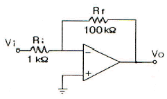
- 0.1[Ω]
- 0.5[Ω]
- 1.0[Ω]
- 5.0[Ω]
(정답률: 알수없음)
59. 어떤 증폭회로에서 무궤환시 전압증폭도가 100이다. 이 증폭기에 궤환율 β=-40[dB]인 부궤환을 걸었을 때 전압이득은?
- 10
- 25
- 50
- 75
(정답률: 알수없음)
60. 듀티 비가 0.1이고, 주기가 20[μs]인 펄스의 폭[μs]은?
- 0.2[μs]
- 2[μs]
- 100[μs]
- 200[μs]
(정답률: 알수없음)
4과목: 물리전자공학
61. 펀치스루(punch through) 현상에 대한 설명으로 가장 옳지 않은 것은?
- 이미터, 베이스, 컬렉터의 단락 상태이다.
- 펀치스루 전압은 베이스 영역폭의 제곱에 비례한다.
- 컬렉터 역 바이어스의 증가에 의해 발생하는 현상이다.
- 펀치스루 전압은 베이스 내의 불순물 농도에 반비례한다.
(정답률: 알수없음)
62. 열전자를 방출하기 위한 재료의 조건으로 옳지 않은 것은?
- 융점이 낮아야 한다.
- 일함수가 작아야 한다.
- 방출 효율이 좋아야 한다.
- 진공 중에서 쉽게 증발되지 않아야 한다.
(정답률: 알수없음)
63. 진성 반도체에서 온도가 상승하면?
- 반도체의 저항이 증가한다.
- 원자의 에너지가 증가한다.
- 정공이 전도대에 발생된다.
- 금지대가 감소한다.
(정답률: 알수없음)
64. 다음은 드브로이(de Broglie) 전자파의 파장 λ를 나타내는 관계식이다. h에 가장 합당한 것은?
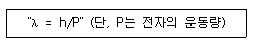
- 일함수
- 페르미(Fermi)의 상수
- 플랭크(Plank)의 상수
- 볼쯔만(Boltzmann)의 상수
(정답률: 알수없음)
65. 전자가 외부의 힘(열, 빛, 전장)을 받아 핵의 구속력으로부터 벗어나 결정 내를 자유로이 이동할 수 있는 자유전자의 상태로 존재하는 에너지대는?
- 충만대(filled band)
- 금지대(forbidden band)
- 가전자대(valence band)
- 전도대(conduction band)
(정답률: 알수없음)
66. 분포함수란 어떤 에너지에 대해 입자가 차지하고 있을 확률을 의미하는데 다음 중 이러한 분포함수가 아닌 것은?
- Bose-Einstein 분포함수
- Maxwell-Boltzman 분포함수
- Fermi-Dirac 분포함수
- De-Brogli 분포함수
(정답률: 알수없음)
67. 300[°K]에서 페르미 준위보다 0.1[eV]만큼 낮은 에너지 준위에 전자가 점유하는 확률은 약 얼마인가?
- 0.02
- 0.1
- 0.7
- 0.98
(정답률: 알수없음)
68. 터널 다이오드(tunnel diode)의 특징 중 옳지 않은 것은?
- 부성 저항 특성이다.
- 역바이어스 상태에서는 도체이다.
- 작은 정바이어스 상태에서 저항은 대단히 크다.
- 고속 스위칭 회로와 마이크로웨이브 발진기에 응용된다.
(정답률: 알수없음)
69. 쉬뢰딩거(Schrodinger) 방정식에 관한 설명으로 옳지 않은 것은?
- 전자의 위치를 정확히 구할 수 있다.
- 전자의 위치 에너지가 0이라도 적용할 수 있다.
- 깊은 전위장벽의 상자에 싸여 있는 전자의 에너지는 양자화된다.
- 깊은 전위장볍의 상자에 싸여 있는 전자에 대한 전자파는 정재파이다.
(정답률: 알수없음)
70. 진성반도체에서 온도에 따른 페르미 준위와의 관계로 가장 옳은 것은?
- 가전자대 쪽으로 접근한다.
- 전도대 쪽으로 접근한다.
- 금지대 중앙으로 접근한다.
- 온도와는 무관하다.
(정답률: 알수없음)
71. 가전자대의 전자가 빛의 에너지를 흡수하여 전도대로 올라감으로써 한 쌍의 자유 전자와 정공이 생성되는 현상은?
- 광도전 현상
- 내부 광전 효과
- 열생성
- 확산
(정답률: 알수없음)
72. 열전자 방출에 대한 설명으로 옳지 않은 것은?
- 고온으로 가열하면 전자가 튀어나오는 현상이다.
- 열전자 방사량은 금속의 절대온도에 비례한다.
- 연전자 방사량은 열음극의 일함수와 관계가 있다.
- 열전자 방출에 의해 schottky 효과가 발생한다.
(정답률: 알수없음)
73. 순수 반도체가 절대온다 0[°K]의 환경에 존재하는 경우 이 반도체의 특성을 바르게 설명한 것은?
- 소수의 정공과 소수의 자유전자를 가진다.
- 금속 전도체와 같은 행동을 한다.
- 많은 수의 정공을 갖고 있다.
- 절연체와 같이 행동한다.
(정답률: 알수없음)
74. 어떤 반도체의 금지대폭 Eg가 상온 300[°K]에서 500[kT]일 때 이 반도체가 도전 상태가 되기 위한 필요 에너지는 약 얼마인가?
- 2[eV]
- 8[eV]
- 13[eV]
- 20[eV]
(정답률: 알수없음)
75. PN 접합시 순방향으로 바이어스 되었을 때의 설명 중 옳은 것은?
- 다수 캐리어가 서로 다른 쪽에 주입된다.
- P형 쪽 전자만이 N형 영역으로 들어간다.
- P형 영역의 정공만이 N형 쪽으로 주입된다.
- 어떤 전류도 흐르지 않는다.
(정답률: 알수없음)
76. 균일한 정자계 B속으로 자계와 직각 방향으로 속도 V로 전자가 들어갔다. 이때 속도 V를 2배로 변경했을 때 전자의 운동은 어떻게 되겠는가?
- 원운동의 주기는 2배가 된다.
- 원운동의 각속도는 4배가 된다.
- 원운동의 주기는 변하지 않는다.
- 원운동의 반경은 변하지 않는다.
(정답률: 알수없음)
77. 1[Coulomb]의 전하량은 전자 몇 개가 필요한가? (단, e=1.602×10-19[C])
- 6.24×1016
- 6.24×1018
- 6.24×1020
- 6.24×1022
(정답률: 알수없음)
78. CCD(Charge-coupled divice)의 동작 원리와 가장 유사한 전자 소자는?
- MOSFET
- 접합트랜지스터
- 서미스터
- 제너다이오드
(정답률: 알수없음)
79. JFET의 핀치오프 전압에 대한 설명으로 옳지 않은 것은?
- 채널의 폭에 비례한다.
- 재료의 비유전율에 반비례한다.
- 채널 부분의 도핑 밀도에 비례한다.
- 드레인 소스간을 개방한 경우는 공간 전하층으로 채널이 막혔을 때의 게이트 역전압이다.
(정답률: 9%)
80. 다음 중 서미스터(thermistor)의 재료가 될 수 없는 것은?
- 철의 산화물
- 망간의 산화물
- 니켈의 산화물
- 은의 산화물
(정답률: 알수없음)
5과목: 전자계산기일반
81. 명령어 중 데이터 처리 명령어에 해당하지 않은 것은?
- 전송 명령어
- 로테이트 명령어
- 논리 명령어
- 산술 명령어
(정답률: 알수없음)
82. 64K인 주소공간과 4K인 기억공간을 가진 컴퓨터의 경우, 한 페이지(page)가 512워드로 구성된다면 페이지와 블록 수는?
- 페이지 : 16, 블록 : 12
- 페이지 : 16, 블록 : 16
- 페이지 : 128, 블록 : 8
- 페이지 : 128, 블록 : 16
(정답률: 알수없음)
83. 어셀블리 언어(assembly language)의 설명으로 틀린 것은?
- 기계어를 사람이 이해할 수 있도록 만든 저급 수준의 언어이다.
- 컴퓨터 하드웨어에 대한 첪분한 지식이 없어도 프로그램을 작성하기가 용이하다.
- 각 컴퓨터는 시스템별로 고유의 어셈블리 언어를 갖는다.
- 하드웨어와 밀접한 관계를 갖고 있으므로 하드웨어를 효율적으로 사용할 수 있다.
(정답률: 알수없음)
84. 보수기(complementer)를 구성하는데 필요한 gate는?
- AND 및 OR
- XOR
- OR와 XOR
- NOR
(정답률: 알수없음)
85. 논리 연산 중 마스크 동작은 어느 동작과 같은가?
- OR
- AND
- XOR
- NOT
(정답률: 알수없음)
86. ASCII 코드의 존(zone) 비트와 디짓(digit) 비트의 구성으로 옳게 표시한 것은?
- 존 비트 : 4, 디짓 비트 : 3
- 존 비트 : 3, 디짓 비트 : 4
- 존 비트 : 4, 디짓 비트 : 4
- 존 비트 : 3, 디짓 비트 : 3
(정답률: 알수없음)
87. 수평 마이크로프로그램의 특징이 아닌 것은?
- 하드웨어를 효율적으로 사용할 수 있다.
- 데이터 해독에 따른 시간지연이 발생하지 않는다.
- 제어기억장치의 사용용량이 작아진다.
- 마이크로명령어의 길이가 증가한다.
(정답률: 알수없음)
88. 2진수의 부동소수점(floating point) 표현에 대한 설명으로 틀린 것은?
- 고정소수점(fixed point) 표현 방식보다 수를 표현할 수 있는 범위가 넓다.
- 지수(exponent)를 사용하여 소수점의 범위를 넓게 이동시킬 수 있다.
- 소수점이하의 수를 나타내는 가수(mantissa)의 비트수가 늘어나면 정밀도가 증가한다.
- IEEE 754 부동소수점 표준 중 64비트 복수 정밀도 형식은 32비트 지수를 가진다.
(정답률: 알수없음)
89. 태스크 스케줄링 방법 중 Round-Robin 방식에 대한 설명으로 옳지 않은 것은?
- FIFO 방식으로 선점(preemptive)형 기법이다.
- 대화식 사용자에게 적당한 응답시간을 보장한다.
- 처리하여야 할 작업의 시간이 가장 적은 프로세스에게 CPU를 할당하는 기법이다.
- 시간할당량이 작을 경우 문맥교환에 따른 오버헤드가 커진다.
(정답률: 알수없음)
90. 마이크로프로세서 내부에 있는 레지스터에서 일반적으로 사용되는 기억소자는?
- Magnetic Tape
- Magnetic Disk
- Magnetic Core
- Flip-Flop
(정답률: 알수없음)
91. 서브루팀 호출시 필요한 자료 구조는?
- 스택(stack)
- 환형 큐(circular queue)
- 다중 큐(multi queue)
- 트리(tree)
(정답률: 알수없음)
92. 전파 지연 시간이 가작 적은 IC는?
- TTL
- ECL
- CMOS
- Schottky TTL
(정답률: 알수없음)
93. 컴퓨터의 구조 중 스택 구조에 대한 설명으로 옳지 않은 것은?
- 스택 메모리의 번지 레지스터로서 스택 포인터가 있으며 LIFO로 동작한다.
- 메모리에 항목을 저장하는 것을 PUSH라 하고 빼내는 동작을 POP이라고 한다.
- PUSH, POP 동작시 SP를 증가시키거나 감소시키는 문제는 스택의 구성에 따라 달라질 수 있다.
- PUSH, POP 명령에서 스택과 오퍼랜드 사이의 정보 전달을 위해서는 번지 필드가 필요없다.
(정답률: 알수없음)
94. 디스크 판의 같은 위치에 놓여있는 트랙들의 집합은?
- 실린더
- 하드디스크
- 섹터
- 블록
(정답률: 알수없음)
95. java 언어에서 지역 변수나 멤버 변수를 변경할 수 없음을 나타내는 상수로 지정하는 제한자(한정자)는?
- public
- private
- protected
- final
(정답률: 알수없음)
96. C 언어의 지정어(reserved word)가 아닌 것은?
- auto
- default
- enum
- jump
(정답률: 알수없음)
97. 다음 C 프로그램의 출력은?
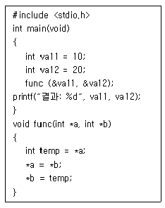
- 결과: 10 10
- 결과: 10 20
- 결과: 20 10
- 결과: 20 20
(정답률: 알수없음)
98. 분기 명령어 길이가 3바이트 명령어이고 상대 주소모드인 경우 분기명령어가 저장되어 있는 기억장치 위치의 주소가 256AH이고, 명령어에 지정된 변위값이 -75H인 경우 분기되는 주소의 위치는?
- 24F2H 번지
- 24F5H 번지
- 24F8H 번지
- 256DH 번지
(정답률: 34%)
99. 어드레싱 모드(addressing mode)에서 현재의 명령어 번지와 프로그램 카운터의 합으로 표시되는 방식은?
- direct addressing mode
- indirect addressing mode
- absolute addressing mode
- relative addressing mode
(정답률: 알수없음)
100. 인터럽트(interrupt)의 발생과 처리과정에서 수행되는 내용이 아닌 것은?
- 모든 register의 내용을 clear 한다.
- 실행 중인 프로그램을 중단하고, return address를 stack에 보관한다.
- interrupt vector table을 loading 한다.
- interrupt service routine을 실행한다.
(정답률: 알수없음)